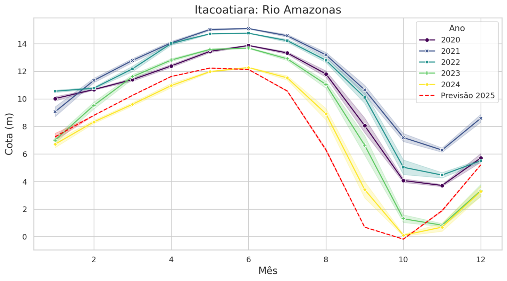
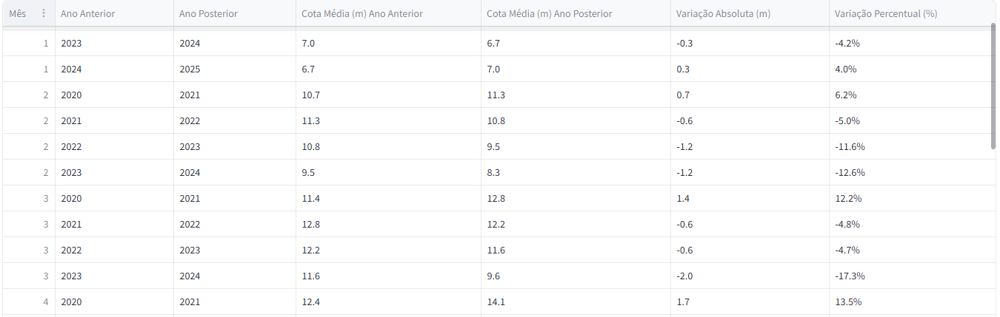

Monitoramento e Previsão dos Níveis de Água dos Rios
Sua empresa importa produtos por portos ligados a rios estratégicos. Alguns desses produtos possuem alta sazonalidade de venda no verão. No entanto, existe um histórico de redução significativa na cota dos rios devido à seca, o que pode inviabilizar o transporte por algumas rotas. Diante disso, é essencial monitorar os níveis de água dos rios e projetar tendências futuras para antecipar decisões estratégicas e mitigar riscos


Processo proposto:
- Coleta de dados: Extração automática (web scraping) de informações brutas de uma fonte confiável (Proama Amazonas);
- Manipulação e análise: Processamento dos dados, criação de gráficos informativos e automação das análises utilizando Python;
- Projeção futura: Aplicação de modelos de séries temporais, como ARIMA, para prever os níveis futuros dos rios;
- Deploy dinâmico: Disponibilização das análises e previsões em uma plataforma mais intuitiva e acessível, como um dashboard interativo.
Informações do Projeto
- Categoria: Web Scraping
- Data do Projeto: 11 Novembro, 2024